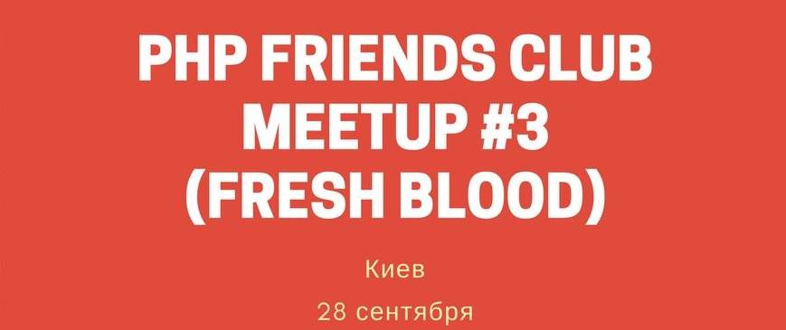

28 сентября (четверг) в Киеве, третья оффлайн встреча PHP Friends Club.
Цель встречи - послушать доклады, поделиться опытом, завести новые знакомства и просто пообщаться.
Время: 19:00 - 21:30 (2.5 часа)
Формат:
2 доклада + живое общение.
На эту встречу мы приглашаем докладчиков имеющих небольшой опыт выступлений.
Одна из целей нашего клуба - дать возможность начинающим спикерам попробовать свои силы.
Программа (Докладчики):
Михаил Лебедев
Developer. 3 years of experience with PHP, More than 4 years of .net/c#
experience.
Тема: Работа с унаследованным (legacy) кодом
- Четыре основные причины внесения изменений в программном коде. Что их объединяет.
- Как отличить хороший проект от плохого?
- Сохраняем поведение.
- Блочные тесты и требования к ним.
- Зависимости. Причины для разрыва зависимостей. Распознавание и разделение. Швы.
- Решение проблемы распознавания.
- Способы решения проблемы разделения.
Roman Sevastyanov
Software developer, founder Pizdata Inc. 5 years experience in development.
Тема: Load testing of PHP Applications
- Когда тестировать?
- Что тестировать при нагрузочном тестировании?
- Как тестировать?
- Разбор популярных инструментов и практик
Где проходит:
Офис компании Ciklum, г. Киев, ул. Амосова, 12 (20 этаж, Sky Point) (Подробнее)
Новости встречи публикуются в Facebook группе
Если вы хотите быть вкурсе наших событий, подпишитесь на рассылку.